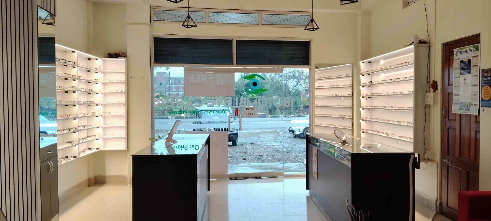
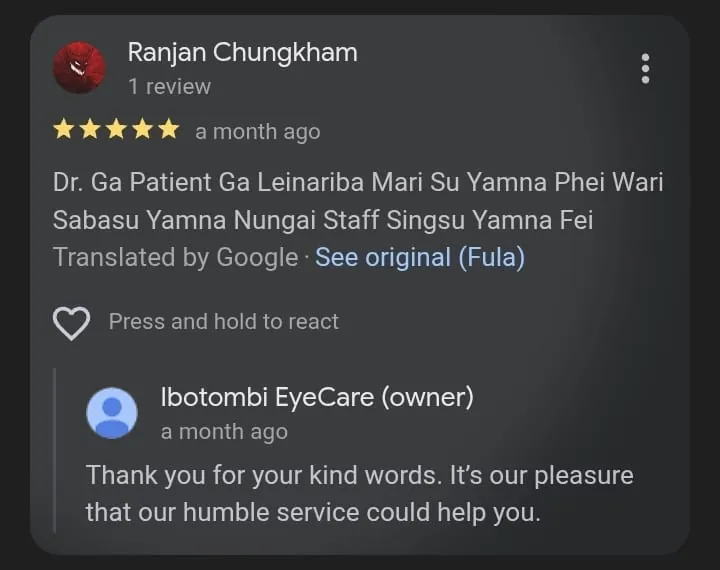
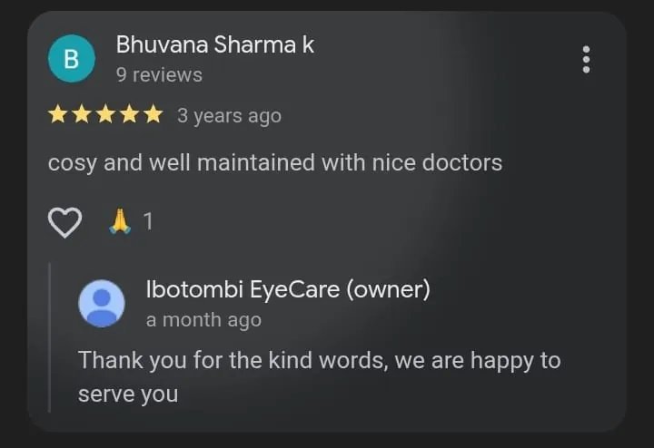
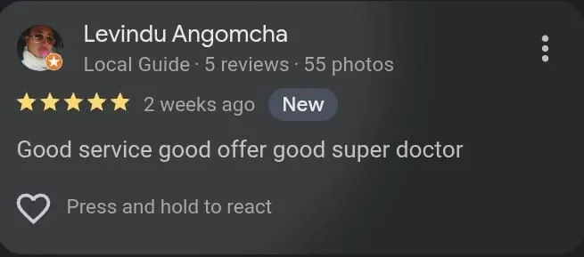

Cataract Care
Assessment, surgical counseling and recovery follow-up for clouded lenses causing blurred vision.
Learn moreFrom cataract and glaucoma review to pediatric myopia screening, Orthoptek vision therapy and corneal cross-linking — Ibotombi Eye Care brings hospital-grade ophthalmology to Canchipur, Imphal. You will never be rushed, spoken over, or left wondering what happens next.


Ibotombi Eye Care brings together specialty eye services with a calm, patient-focused experience. Families, working adults, seniors and diabetic patients receive screening, treatment planning and long-term monitoring under one roof.
We treat with empathy — because an eye problem is rarely just an eye problem. It is a child falling behind in class, a farmer who cannot see the road home, a parent afraid of losing their independence. You will be listened to first, examined carefully, and told in plain language what is happening and what comes next.
From school vision concerns to age-related and diabetic eye care.
South of Manipur University gate with visible timings and booking.
Built around checkups, reviews and long-term vision monitoring.
Slit lamp, Orthoptek therapy and the OMNI corneal cross-linking system.
A complete clinical mix for diagnosis, long-term monitoring, pediatric vision and optical support — including corneal cross-linking, available nowhere else in Manipur.
Assessment, surgical counseling and recovery follow-up for clouded lenses causing blurred vision.
Learn moreEvaluation and management for corneal conditions that affect clarity, comfort and visual quality — including keratoconus assessment.
Learn morePressure checks, optic nerve review and structured monitoring, especially for adults above 50.
Learn moreRetina-focused evaluation and diabetic retinopathy screening for early, sight-saving decisions.
Learn moreAssessment for eyelid and surrounding structures affecting comfort, function and appearance.
Learn morePractical treatment for burning, irritation, watering, digital fatigue and unstable tear film.
Learn moreScreening and progression-focused care for school children with distance blur or changing glasses.
Learn moreStructured vision therapy for lazy eye, stereopsis and binocular function — with newly installed Orthoptek.
Learn moreLens selection, fitting support and day-to-day usage guidance for comfortable visual correction.
Learn moreThe only centre in Manipur offering corneal collagen cross-linking — the treatment that halts keratoconus before it steals more of your sight.
See the treatmentWe bring the clinic to your school — vision screening, refraction and eye-health education for every child, on your campus.
Invite us to your schoolA child-friendly room, picture-based vision charts and unhurried, gentle examination — so a first eye test never becomes a frightening memory.
Learn moreTechnology alone does not heal anyone. What changes outcomes is advanced capability in the hands of people who take the time to explain, reassure and follow up. That is the standard we hold ourselves to on every visit — from your first call to your last review.
Convenient Canchipur location with extended weekly hours and direct booking routes.
Myopia, glaucoma and diabetic retina addressed the way patients truly need.
Corneal cross-linking for keratoconus — the only such centre in all of Manipur.
Every treatment plan is designed around structured follow-up.
Real clinical priorities — and one capability no other centre in Manipur has.
In keratoconus, the cornea slowly thins and bulges into a cone, blurring and distorting vision year after year. Glasses stop helping. Until now, families in Manipur had to travel out of the state — at great cost and worry — for the treatment that halts it.
Ibotombi Eye Care is the only hospital in all of Manipur offering corneal collagen cross-linking, performed on the OMNI Cross Linking System with live eye-tracking. Riboflavin drops and precisely controlled UV light strengthen the bonds inside your cornea, stiffening it so the condition stops progressing.

Orthoptek was installed on April 17, 2026. It adds a non-invasive therapy pathway for selected amblyopia, lazy eye, stereopsis and binocular function cases — always after a proper clinical assessment.


A child who cannot see the blackboard is often mistaken for a child who is not trying. Our team travels to schools across Manipur with the same equipment we use in the clinic — screening every student, spotting the children who need glasses, and explaining it kindly to those who have never had an eye test before.


Photographs from a recent school eye check-up workshop conducted by our team
Share the number of students and your preferred dates. We plan the day around your timetable.
Our team arrives with vision charts, autorefractometer and trial sets — and screens class by class.
Children needing glasses or further care go home with a clear note, and are welcomed at the clinic for follow-up.
Nobody arrives at an eye clinic feeling relaxed. There is usually a worry underneath — about a child's schooling, about work, about independence. We have built this clinic so that worry is met with patience, not paperwork. That is what we mean when we say we treat with empathy.
Real clinic imagery — not stock placeholders — so you know exactly what to expect before you arrive.




“The service is really good… I appreciate everyone for their good service.”
Google review“Affordable price for frames and lens, premium lens available.”
Google review“The best doctor in town. Excellent interaction.”
Google review

